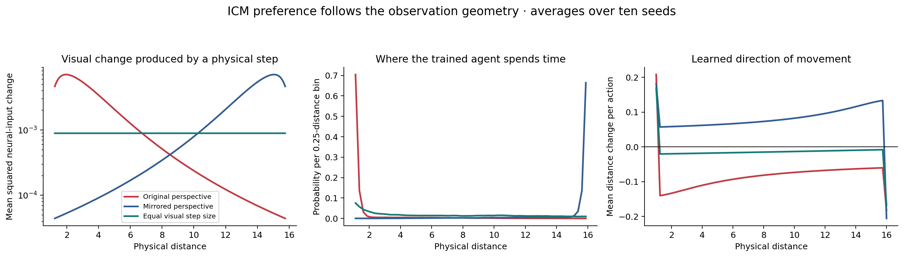
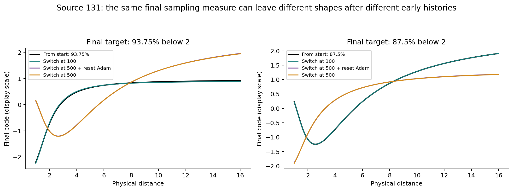
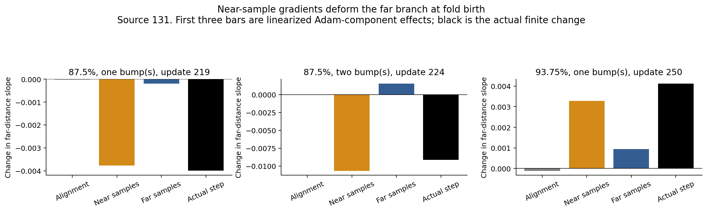
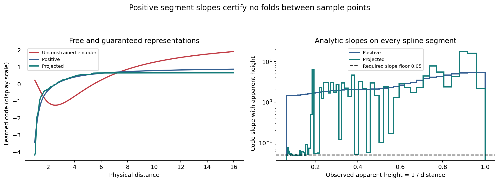
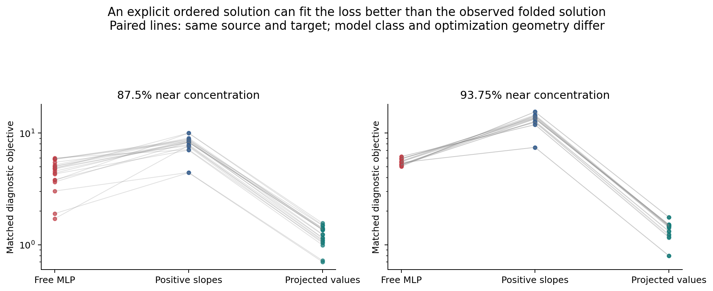
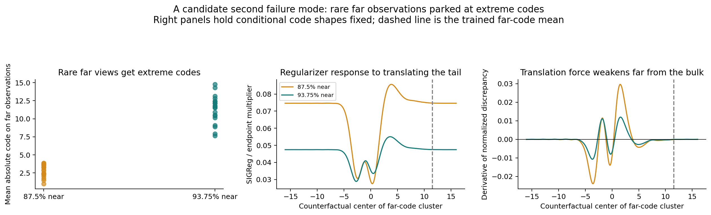

Hypotheses and guaranteed no-fold models
Explanation and proofs · Measured tables
geometry and actor preference

distribution switches

near far gradient balance

hard no fold guarantee

objective comparison

rare tail codes
